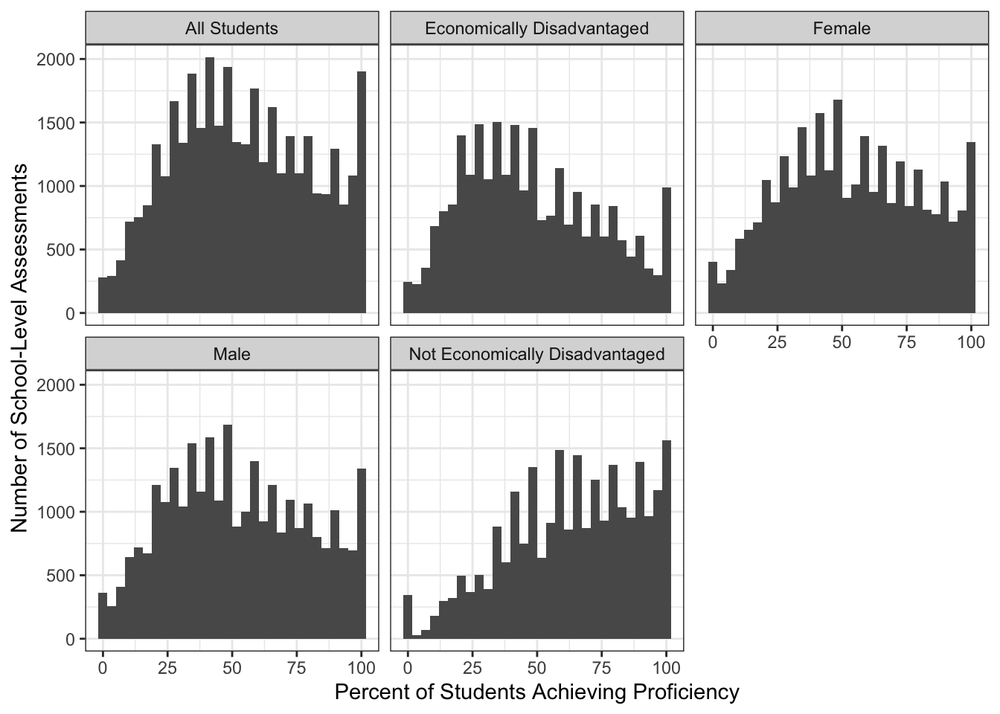

In lieu of a final exam, STA 9890 has a prediction competition worth half of your final grade.
Use only Provided Information
You may not use any external data beyond what the instructor provides. You will be required to attest to this in your final submission. Students found to use data outside instructor-provided files will receive a zero on all grades related to the course competition and will likely fail the course as a result.
You may read published research about predictors of student success to gain qualitative background information, but you may not access their data. You will be required to cite all background reading in your final report.
The 200 total points associated with this competition will be apportioned as:
100 points: Prediction Accuracy on private leaderboard
50 points: Final Presentation
50 points: Final Report
Overview
Background
Persuant to the Every Student Succeeds Act (ESSA) of 2015 and its predecessor, the No Child Left Behind Act (NCLB) of 2001, all public schools in New York State are required to administer standardized examinations annually to their students. Students’ results on these tests are used for a variety of purposes, including assessing teacher and school performance, providing additional recognition to high-performing schools, and identifying struggling students or subgroups. The New York State Education Department (NYSED) makes aggregate test results available through its annual “School Report Card” data releases. For this project, you will predict the percentage of students at each school who score in the “Proficient” range (i.e., at or above grade level) on a wide battery of standardized tests during the 2024 testing period.
New York administers two primary sets of standardized exams:1
Grade 3-8 Exams:
English Language Arts (“ELA”) given every year
Mathematics given every year
Science, typically given only in grade 5 and grade 8
The Regents exams cover a broader variety of topics and, historically, have been a graduation requirement in NYS. For each exam, a “proficiency” level is determined: e.g., if a exam gives scores from “1” to “4”, levels “3” and “4” may be considered “proficient”. Your task is to predict the fraction of students who achieve proficiency.
The organization of public schools in New York State is, like everything in New York State, rather confusing. As of the time of writing, NYSED reports:
730 Districts
4,394 Public Schools
373 Charter Schools
215,701 Public School Teachers
2,421,491 Public School Students
in the state. These districts range from very small, e.g., Newcomb CSD with 47 students to very large, e.g., NYC Public Schools with just under a million students.
Outside of NYC, public schools are organized into local school districts, which typically have (at least) one elementary school, one middle school, and one high school.2 These districts are further organized into Boards of Cooperative Educational Serices “BOCES” which provide shared resources to groups of smaller districts. Local school districts are principally funded by property taxes, with more affluent districts having a larger tax base and providing higher per-student funding levels. Local school districts are run by an elected school board, following statewide standards. To address differences in funding, NYSED provides supplemental funding to districts based on their assessed “Needs/Resource Capacity”, though work is ongoing to update and refine the current funding formula.
Within NYC, public schools are run by the NYC Department of Education (NYC DOE), under a commissioner and school board appointed by the mayor and borough presidents. NYCDOE is subdivided into 32 geographic school districts and two citywide districts providing specialized services for students with disabilities or students in alternative education programs.
Data
You have access to three data files for model building:
and a Test Set on which your model will be evaluated.
School-Level Data
The School-Level Data contains data on 4754 schools throughout New York State. The 52 columns of this data set can be broken into 6 groups:
Anonymized Identifiers (SCHOOL, DISTRICT, COUNTY): These eight character IDs encode the identity of the school, the relevant school district, and the county in which the school is located. These identifiers are consistent across all files provided to you, but you will not otherwise be able to interpret them.
District Need Type and Location (DISTRICT_TYPE, REGION): These provide basic information about the type of school district (High-Need Urban, Low-Need, etc) based on the N/RC categories and rough location within ten regions of NYS:
Grade-Level Enrollment (N_PUPILS, PRE_K, K, GRADE_NN). These give the reported enrollments at each grade level from pre-kindergarten to twelfth grade (GRADE_12). For reasons that are not entirely clear, these do not always add up to the reported total enrollment (N_PUPILS).
These demographic indicators should be more or less self-explanatory. Note that the education department uses a slightly different set of racial and ethnic categories than the more commonly reported census categories.
Student Attendance, and Discipline Rates (ATTENDANCE_RATE, PERCENT_OF_STUDENTS_SUSPENDED)
Professional and teaching staff are the single most important ‘in-building’ contributor to student learning outcomes. While I am not providing you teacher-level data, I am providing you with raw counts of the number of teachers, school counselors, and social workers assigned to each school. You can combine this with enrollment data to get a rough estimate of teacher-pupil ratios.
Additionally, some research suggests that long-tenured teachers have additional positive impacts on student learning, so I am providing a measure of teacher turnover. (NYSED does not give a detailed description of how this measure is calculated, but higher scores indicate more turnover and shorter-tenures in the teaching staff.)
Class Size by Subject (LANGUAGE_ARTS_AVERAGE_CLASS_SIZE, MATHEMATICS_AVERAGE_CLASS_SIZE, SCIENCE_AVERAGE_CLASS_SIZE, HISTORY_GOVERNMENT_AND_GEOGRAPHY_AVERAGE_CLASS_SIZE, GRADE_1_AVERAGE_CLASS_SIZE, GRADE_2_AVERAGE_CLASS_SIZE, KINDERGARTEN_AVERAGE_CLASS_SIZE)
Class size is often considered one of the strongest predictors of student learning outcomes. Here, average class size is reported for different subjects. Note that these columns have many missing (NA) values as not all schools offer all subjects, e.g., both elementary schools and high schools have math classes, but only elementary schools have first grade.
Student Family Economics (PERCENT_FREE_LUNCH, PERCENT_REDUCED_LUNCH)
These percentages are a measure of the financial status of students’ families. Eligibility for free or reduced price school lunches is determined annually by the USDA. See here for the relevant eligibility thresholds for the 2024 school year.
School Funding Levels (FEDERAL_FUNDING_PER_PUPIL, LOCAL_FUNDING_PER_PUPIL) These amounts (in dollars per student) capture the amount of funding flowing to the school. Note that LOCAL_FUNDING includes both funding through local property taxes (the primary means of funding for most suburban districts) and funding distributed by New York State to individual districts.
In addition to the school-specific data, I am also providing you with district-level graduation data. This data is reported over a four-year lookback, so - since we are looking at 2024, this is the cohort the entered high school in Fall 2020 (God bless them!).
This data covers 674 different districts and reports the percentage of students achieving 5 different outcomes:
PERCENT_DIPLOMA
PERCENT_NON_DIPLOMA
PERCENT_STILL_ENROLLED
PERCENT_GED
PERCENT_DROPOUT
Note that this data is provided on a district-level, not a school level, as elementary and middle schools do not collect this data.
Training Set
A training set of 144921 are provided for you to build your models. The target variable for this data set is PERCENT_PROFICIENT, which ranges from 0 to 100. Scores here are reported for 4469 different schools (SCHOOL), 5 different subpopulations SUBGROUP_NAME, and 32different standardized assessments (ASSESSMENT_NAME). The SCHOOL column can be used to connect this data with the school-level covariates provided above.
Even on this relatively simple subset of the data, several interesting patterns emerge:

We see here a rough bell curve in the overall population (with several artifacts resulting from the ‘discreteness’ of test scores), systematic underperformance of students from economically disadvantaged households, and a slight, but statistically significant, overperformance by female students.
The ASSESSMENT_ID column is a unique identifier used to identify a unique combination of (SCHOOL, SUBGROUP_NAME, ASSESSMENT_NAME). This will be used to organize your submissions on Kaggle, but is not of interest otherwise.
Finally, I also provide you with N_STUDENTS, the number of students who took each exam.
Test Set
Your task is to make predictions on a test set of 48307 assessments. This data is organized like the training set, except the target PERCENT_PROFICIENT variable is not included. See below for an example of how to format your predictions on this data set for input to Kaggle.
Example Predictions
To submit your predictions, you need to upload them to Kaggle through the web interface. A link to register for the course competition will be distributed through Brightspace. Note that you must use your @cuny.edu email so that I can match your Kaggle ID with your student records.
You will submit your data as a two-column CSV with columns:
ASSESSMENT_ID
PERCENT_PROFICIENT
Kaggle will use the ASSESSMENT_ID to align your submissions with the test set, so your rows do not need to be in the same order as the test set file.
A (comically simple) model would simply use the state average proficiency rates for all predictions. In R,
On this data set, the “intercept” model achieves an MSE of 700.703 on the public leaderboard while the “county average” model achieves an MSE of 453.102.
Grading
Prediction Accuracy (100 Points)
Prediction accuracy will be assessed using Kaggle Competitions. I have provided Kaggle with a private test set on which your predictions will be evaluated. Kaggle will further divide the test set into a public leaderboard and a private leaderboard. You will be able to see your accuracy on the public leaderboard but final scores will be based on private leaderboard accuracy so don’t overfit.
You will be allowed to submit only two sets of predictions to Kaggle per day so use them wisely. At the end of the competition, you will be able to select two sets of predictions to be used for your final evaluation (taking the better of the two) so track your submissions carefully.
Kaggle will close for submissions at 11:55pm on the evening before the registrar-determined final exam period for this class.
Grading
Grades for this portion will be assigned based on your performance relative to both the instructor provided baselines (above) and the best score obtained by your fellow students.
In particular, the top score in the class will get a score of 100 automatically. The second example model given above will get a score of 50. Scores for other students will be obtained by linearly interpolating between those two points.
Formally, scores will be given as:
\[\text{Your Grade} = 50 * \left(1 + \left(\frac{\text{Baseline MSE} - \text{Your MSE}}{\text{Baseline MSE} - \text{Class Best MSE}}\right)^{\alpha}\right)\] where \(\alpha \approx 1\) may be tweaked to achieve a desired score distribution.
So, for example, if the baseline MSE is 25, the class best is 5, and your MSE is 10, you will get a score of:
If your best MSE underperforms the baseline MSE, a separate interpolation will be used.
Final Presentation (50 Points)
During the registrar scheduled final exam period (tentatively Wednesday May 20, 2026), each competition unit (either an individual or a team) will give a 6 minute presentation, primarily focused on the models and methods they used to build their predictions. This presentation should include discussion of:
What ‘off-the-shelf’ models were found to be the most useful?
What (if any) extensions to standard models were developed for this project? (These need not be truly novel - if you take an idea from a pre-existing source and adapt it for use in this problem, e.g. because it does not appear in sklearn, this is a contribution worth discussing.)
What (if any) ensembling techniques did you apply?
What features or feature engineering techniques were important for the success of your model?
What techniques for data splitting / model validation / test set hygiene did you use in your model development process?
Presentations must be submitted as PDF slides by noon on the day of final presentations. The instructor will aggregate slides into a single ‘deck’ to be used by all students. (Teams of two should both submit a copy of their slides. The instructor will de-duplicate submissions.)
Students will be graded according to the following rubric:
Report Element
Excellent. “A-” to “A” (90% to 100%)
Great. “B-” to “B+” (80% to 89%)
Average. “C” to “C+” (73% to 79%)
Poor. “D” to “C-” (60% to 72%)
Failure. “F” (0% to 59%)
Quality of Presentation (20 points)
Excellent and Engaging Presentation. Visualizations and script clearly convey content in detail without obscuring the bigger picture.
Great presentation. Visualizations and script convey content well with only minor flaws. Balance of detailed and big-picture exposition is lost.
Solid presentation. Visualizations or script have one to two notable flaws. Insufficient discussion of details OR big-picture.
Poor presentation. Visualizations or script have 3 or more notable flaws. Underwhelming discussion of both details AND big-picture.
Unacceptable presentation. Significant weaknesses in visualization and script. Significant omissions in details or big-picture analysis.
Pipeline Design (10 points)
Excellent pipeline design. Allows for effective re-use of training data without risk of overfitting. Allows for more detailed queries than overall RMSE.
Great pipeline design. Allows for effective re-use of training data without risk of overfitting, but only allows queries of RMSE.
Solid pipeline design. Takes active steps to minimize chance of ‘leakage’ but may allow issues.
Poor pipeline design. Attempts made at avoiding leakage and overfitting, but approach is fundamentally flawed.
Unacceptable pipeline design. Little or no attention paid to data hygiene.
ML Methodology (10 points)
Excellent Methodology. Uses advanced methodologies not covered in class in a way that is well-suited for the prediction task. Methodology uses features and time structure in interesting and creative ways.
Great Methodology. Uses ‘black box’ methodologies not covered in class, but with little specialization for the prediction task. OR Applies and combines methods covered in class with particularly insightful approaches to tuning and specialization for the prediction task.
Solid Methodology. Applies and combines methods covered in class with moderate attempts to tune and specialize for task at hand.
Poor Methodology. Applies methods covered in class without any attempt to improve or specialize for task at hand.
Unacceptable Methodology. Fails to apply any advanced methodology (e.g., only uses linear regression and/or basic ARMA-type time series models).
Excellent FEA. Impressive feature engineering creating significant improvements in predictive performance. Careful analysis of feature importance comparing and contrasting ‘model-specific’ importance and ‘model-agnostic’ importance.
Great FEA. Meaningful feature engineering leading to non-trivial improvements in predictive performance. Analysis of feature importance compared across multiple models.
Solid FEA. Features are treated appropriately, with elementary analysis of feature importance for the model(s) used.
Poor FEA. Features are treated appropriately for their modality, but little to no feature analysis or engineering.
Unacceptable FEA. No attempt to analyze features.
Timing (5 points)
Presentation lasts between 5:45 and 6:15
Presentation lasts between 5:25 and 5:45 or between 6:15 and 6:35
Presentation lasts between 5:00 and 5:25 or between 6:35 and 7:00
Presentation lasts between 4:30 and 5:00 or between 7:00 and 7:30
Presentation runs shorter than 4:30 or longer than 7:30
Students will also vote on an “Audience Choice” award; the winning presentation will automatically receive a score of 50.
Final Report (50 Points)
By Tuesday May 26, 2026 at 23:59 PM, each competition unit (either an individual or a team) will submit a final report of no more than 10 pages (10-12 point, single- or double-spaced) providing an After-Action Report of their competition performance. This report should focus on three topics:
Are there any systematic errors in model predictions that need to be addressed before this model could be applied broadly. (E.g., is it systmatically low or high in a particular subgroup; does it under-predict for especially high outcome samples; etc?)
What insights into the underlying data can be gleaned from the model? E.g., are certain features especially important for making predictions? Or are certain features which you would expect to be important not actually particularly important?
What steps did your team take that were particularly helpful to maximizing predictive performance? Or, what parts of your model development cycle were weak and could be the most improved?4
Note that this report is not solely focused on predictive performance. Analysis that dives deep into the underlying structure of the data and generates novel insights will score as well (or perhaps even better) than a highly performant but noninterpretable model.
To assist in developing this After-Action Report, the instructor will provide non-anonymized versions of the data (as well as a mapping to the anonymized data) after the Kaggle competition ends.
The report should include all code used to prepare the data and train and predict from the best performing models in an Appendix. Significant penalties may be applied if the instructor is unable to reliably reproduce your predictions. (You may choose to submit this Appendix in the form of an iPython Notebook, Quarto document, Docker container, etc to maximize reproducibility.) Note that this appendix does not count against your 10 page limit.
You may, but are not required to, share your code with the instructor via an emailed Zip file or link to a public code hosting platform such as GitHub.
Reproducibility Info
To maximize the reproducibility of your code, make sure to:
Avoid hard-coding any file paths. It is better to download and/or read directly from hosted copies whenever possible.
Save random seeds used to create data splits, initialize training, etc.
List all software and packages used, including version information.
Have a clear set of ‘reproduction steps’ and accompanying documentation.
Teams of two should both submit a copy of their final report. The instructor will de-duplicate submissions.
The report will roughly be assessed acccording to the following rubric though the instructor may deviate as necessary.
Report Element
Excellent. “A-” to “A” (90% to 100%)
Great. “B-” to “B+” (80% to 89%)
Average. “C” to “C+” (73% to 79%)
Poor. “D” to “C-” (60% to 72%)
Failure. “F” (0% to 59%)
Quality of Report (15 points)
Excellent Report. Report has excellent writing and formatting, with particularly effective tables and figures. Tables and Figures are “publication-quality” and clearly and succinctly support claims made in the body text. Text is clear and compelling throughout.
Great Report. Report has strong writing formatting. Text is generally clear, but has multiple minor weaknesses or one major weakness; tables and figures make their intended points, but do not do so optimally.
Solid Report. Report exhibits solid written communication, key points are made understandably and any grammatical errors do not impair understanding. Code, results, and text could be better integrated, but it is clear which elements relate. Formatting is average; tables and figures do not clearly support arguments made in the text and/or are not “publication quality”.
Poor Report. Written communication is below standard: points are not always understandable and/or grammatical errors actively distract from content. Code, results, and text are not actively integrated, but are generally located ‘near’ each other in a semi-systematic fashion. Poor formatting distracts from substance of report. Tables and Figures exhibit significant deficiencies in formatting.
Unacceptable Report. Written communication is far below standard, possibly bordering on unintelligible. Formatting prohibits or significantly impairs reader understanding.
Analysis of Predictive Accuracy (10 points)
Excellent Analysis. Team is able to clearly identify strengths and weaknesses of their model and to propose extensions / next steps that could use de-anonymized structure to further improve model performance.
Great Analysis. Team identifies strengths and weaknesses of their model, but without clear ‘next steps’ for model improvement.
Solid Analysis. Accuracy analysis successfully identifies patterns of error, but does not connect these to modeling.
Poor Analysis. Accuracy analysis attemps to identify patterns of error, but fails to distinguish systematic error from randomness.
Unacceptable Analysis. Accuracy analysis is superficial and does not take advantage of data structure in a meaningful way.
Model-Driven Insights into Data Generating Process (10 points)
Excellent Insights. Modeling process creates significant new insights into the economics of real property assessment. Insights are then used to further improve predictive modelling in a virtuous cycle.
Great Insights. Modeling process creates significant new insights into the economics of real property assessment, but insights do not improve predictive modeling.
Solid Insights. Modeling process creates new non-trivial insights, but not ones that have major impact on predictive performance. (E.g., grey houses have a much higher chance of having rooftop solar than other house colors because grey was the most popular ‘builder spec color’ by the time that residential solar became commonplace. Interesting, but not especially helpful.)
Poor Insights. Modeling process only reproduces known / trivial insights about data generating process (e.g., bigger houses are worth more than smaller houses ceteris paribus).
Unacceptable Insights. No attempt is made at generating meaningful insights from models.
Reflection on Competition Workflow (10 points)
Excellent Reflection. Clear identification of all important good and bad decisions made over the course of the competition, with insightful ‘take aways’ that can be used by self and other teams to significantly improve performance on future prediction tasks. Importance of key decisions is clearly demonstrated.
Great Reflection. Impressive reflection on key decisions (good and bad) made over the course of the competition. ‘Take Away’ messages would be useful if this competition were re-run as is (or with minor changes) but do not necessarily generalize to other similar tasks. Importance of key decisions is partially demonstrated.
Solid Reflection. Reflection on key decisions identifies major choices made throughout competition, but fails to fully analyze their impact. ‘Take away’ messages are useful, but generic and not particularly relevant to this course or this competition. (E.g., advice on the best way to tune the lasso) Minimal effort to demonstrate importance of key decisions.
Poor Reflection. Reflection seems to miss one or more major choices made over the course of the semester OR attributes too much importance to an unimportant decision. Fails to demonstrate importance of key decisions. ‘Take away’ messages are of limited general applicability.
Unacceptable Reflection. Minimal or shallow reflection. ‘Take away’ messages are trivial or misleading.
Reproduction Code (5 points)
Excellent Reproduction Code. Code is easy to read and execute, with excellent commenting, formatting, etc. and clearly reproduces submitted predictions.
Great Reproduction Code. Code is easy to read, but requires some effort to execute and reproduce submitted predictions.
Solid Reproduction Code. Code lacks clarity, but still appears to reproduce submitted predictions with reasonable effort.
At the end of your report, you must include a description of the extent to which you used Generative AI tools in this course competition or in preparation of your final report. Failure to include an AI disclosure will result in an automatic 25% penalty.
E.g.,
AI Usage Statement
No Generative AI tools were used to complete this mini-project.
or
AI Usage Statement
GitHub Co-Pilot Pro was used via RStudio integration while completing this project. No other generative AI tools were used.
Recall that Generative AI may not be used for idea generation or writing your final report. It may only be used for coding assistance and idea generation.
Teams
Students may, but are not required to, work in teams of 2 for this competition. Teams will submit one (shared) final presentation and final report and will receive the same grade for all course elements. Students will create teams via Kaggle’s team functionality.
Teams may be formed at any point in the competition. Teams will not be allowed to dissolve except under truly exceptional circumstances. (Unequal participation is sadly not an exceptional circumstance.)
Footnotes
We are ignoring alternative assessments like the NYSAA for this competition.↩︎
Very small districts may consolidate into two (or even one) school serving a wider variety of grades or arrange for their students to be educated within a neighboring district.↩︎
Feature Engineering and Analysis includes ‘classical’ feature engineering and analysis to identify key features (e.g. feature importance rankings or variable selection).↩︎
In this ‘self-evaluation’ section, you are encouraged to be truthful and honest in your reflections. I already know how well you did and you won’t be able to convince me otherwise, so if you made fundamental errors that hindered your performance, I would rather see them discussed honestly (indicating understanding of how you could improve) rather than minimized.↩︎